kaitech.io
Turn Odoo into an AI-ready tool server. Securely expose your ERP to Claude, ChatGPT, Gemini, Cursor, n8n, LangChain, and any MCP-capable client through a single endpoint — with OAuth 2.0, scoped tokens, audit logs, BI tools, portal pages, async jobs, and AI-driven module generation.
Odoo 18 OPL-1 34+ MCP Toolskaitech.io is a provider of business software solutions specializing in custom Odoo development. We help businesses unlock the full potential of their Odoo instances through reliable, well-tested modules.
Demo Preview
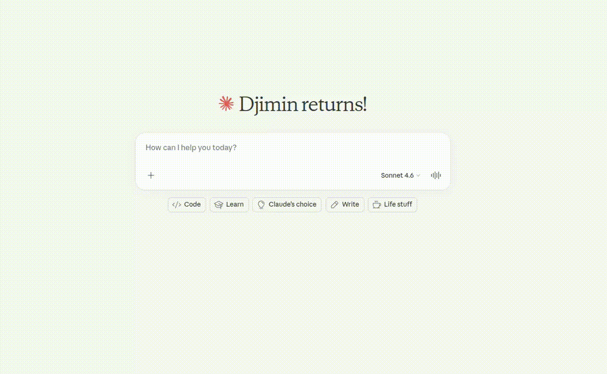
Admin Guide
MCP Server ships with built-in admin controls — manage tokens, audit sessions, clear cache, set retention policies, and test Redis connectivity — all from within Odoo Settings.
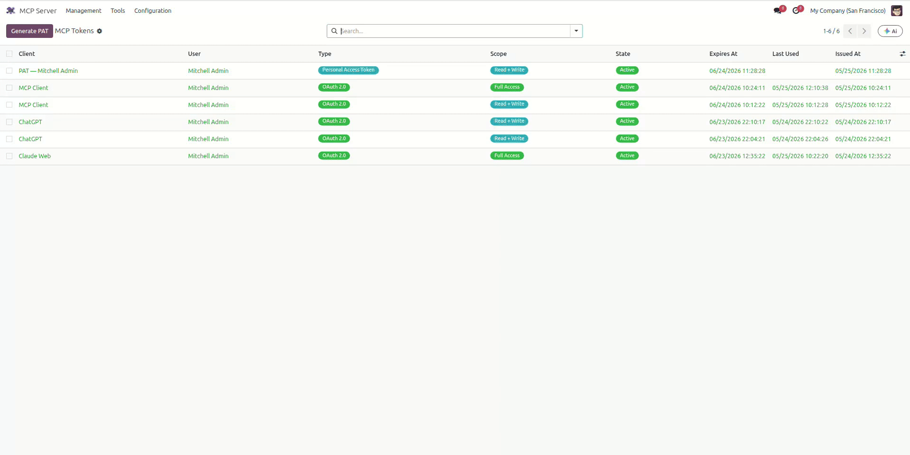
Use Cases
Turn Odoo into an AI-ready tool server. Connect Claude, ChatGPT, Gemini, Cursor/Claude Code, n8n, LangChain, crewAI (and more) to live Odoo data — with governance and audit logs.
Prompt-to-Dashboard
Generate KPI tiles, tables, and interactive ECharts visuals — with filters and drill-down to Odoo records.
Example: "Create a sales executive dashboard for YTD revenue by month and top customers."
Prompt-to-Portal
Create shareable portal pages that render server-side and stay always up-to-date (KPIs, charts, tables).
Example: "Create a shipping schedule page at /mcp-page/shipping with today's outgoing pickings."
Reporting / BI-Ready
Opinionated helpers for analytics queries: pivot, timeseries, top-N, cohort, funnel, and export in one call.
Example: "Top 10 customers by revenue this quarter, grouped by salesperson."
Prompt-to-Workflow
Create/update records via scoped keys, run batch operations, and offload heavy work to async background jobs.
Example: "Create leads from this CSV and assign by territory (batch + background job)."
Prompt-to-Module
Build a validated module spec, generate a ZIP, and install (or download) — including models, security, menus, and views.
Example: "Create a theme park management module with a kanban view and access groups."
External Apps
Build shipping schedules, executive dashboards, or customer portals outside Odoo — backed by live ERP data through one MCP endpoint.
Example: "Build a sales portal that shows real-time order status by customer."
Screenshots
Standards-compliant OAuth 2.0 Authorization Code flow with PKCE S256. Users authorize MCP clients through a branded login screen — credentials never leave Odoo.
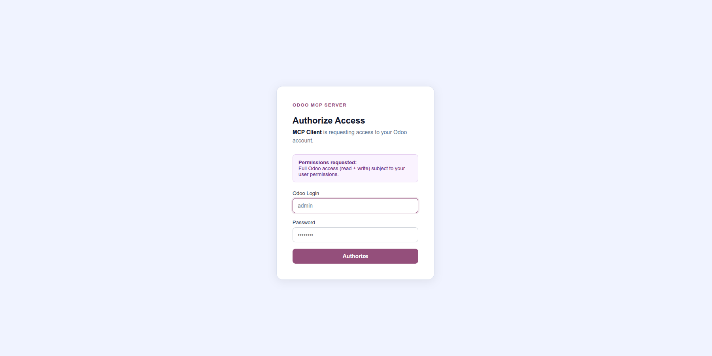
Each user can mint their own scoped Personal Access Tokens for command-line tools, CI pipelines, and headless integrations. SHA-256 hashed at rest, shown only once.
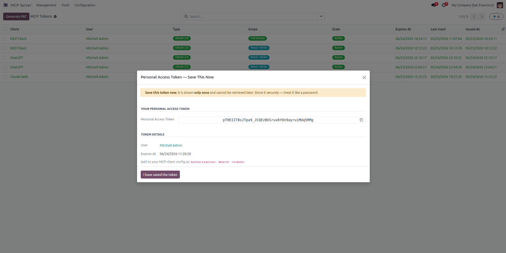
Configure per-token scope (read-only, read-write, admin), model allowlist, field allowlist, IP allowlist/denylist, and audit payload capture — least-privilege access by default.
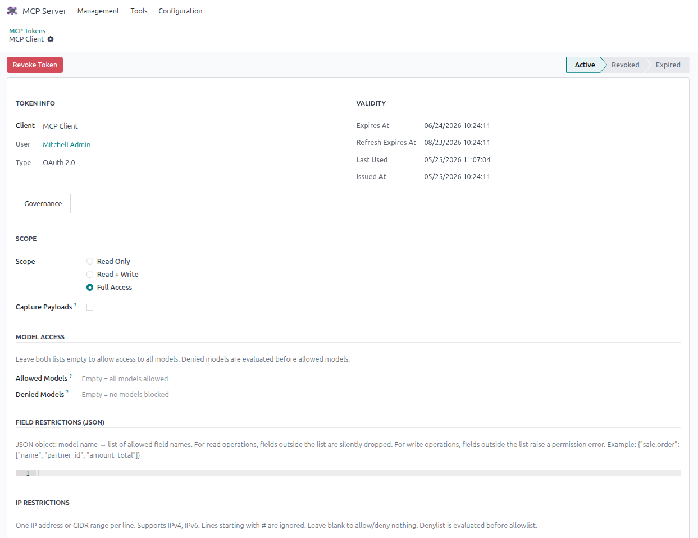
Every MCP session is recorded with transport type, IP address, tool call count, duration, and (optionally) full request/response payloads with PII redaction.
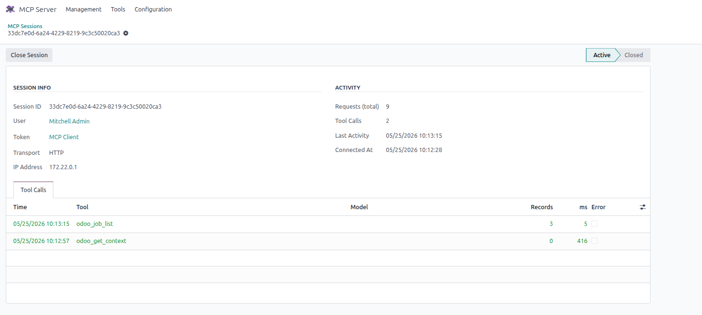
Offload heavy work — bulk updates, mass exports, multi-step automations — to a background queue. Poll progress, inspect payloads, retry failures, and surface results back to the AI client without hitting HTTP timeout limits.
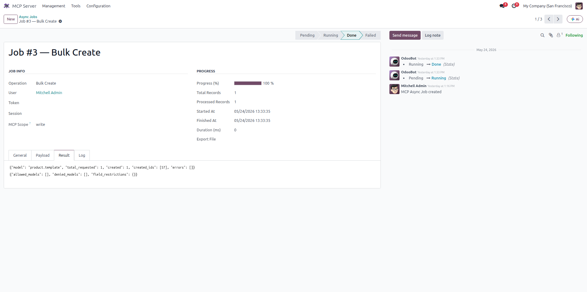
Ask Claude to "create a shipping dashboard at /mcp-page/shipping" and get a public, mobile-responsive page rendered server-side from live Odoo data — KPI tiles, ECharts visuals, and interactive tables, no front-end work required.
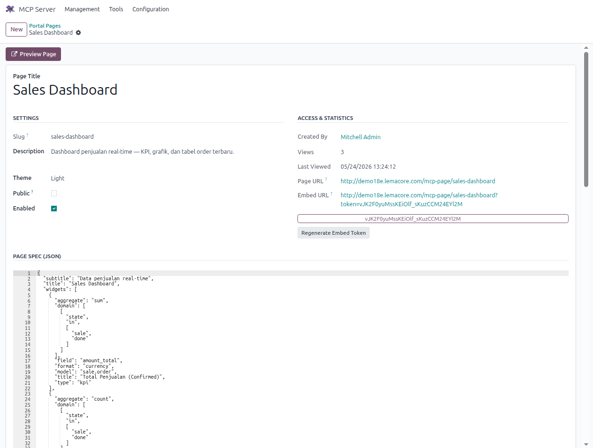
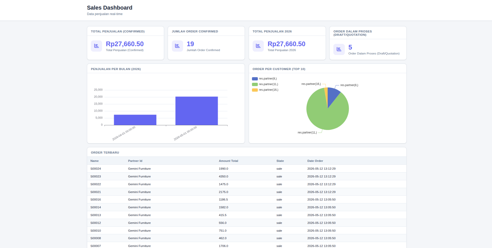
Describe the module you need in plain English. Claude produces a validated spec, the generator builds a fully-formed Odoo module (models, security, views, menus), and you can install it directly or download the ZIP for review.
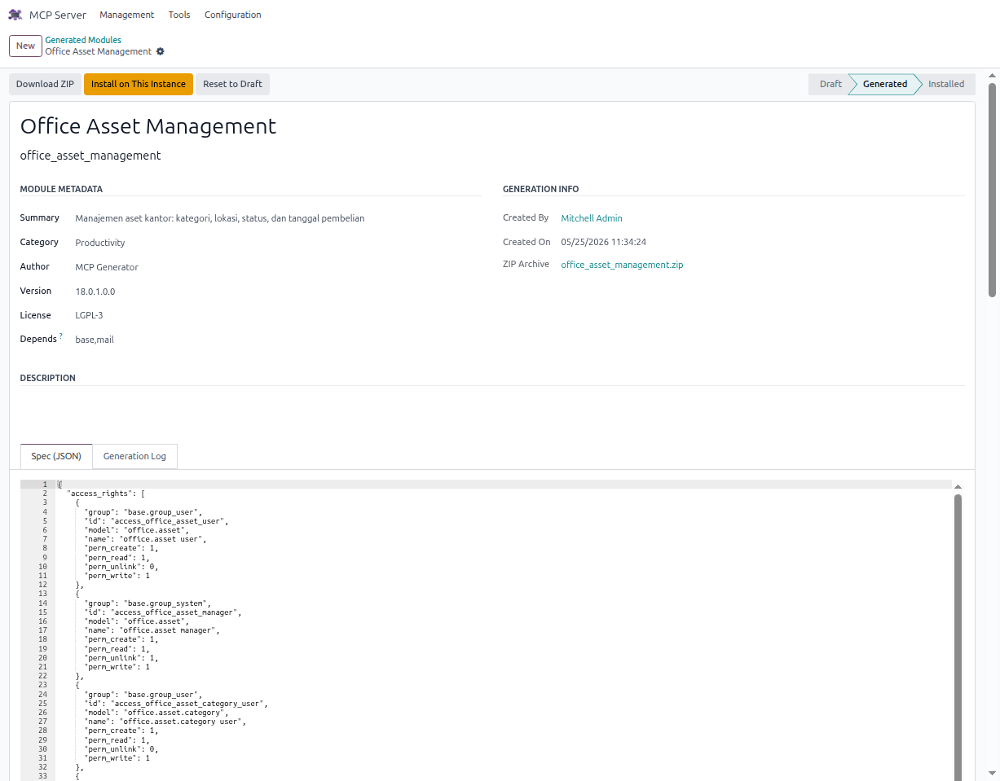
Manage retention policies, rate limits, Redis caching, schema cache TTL, and the module-generator feature flag — all from a single screen inside Odoo Settings. No external admin UI required.
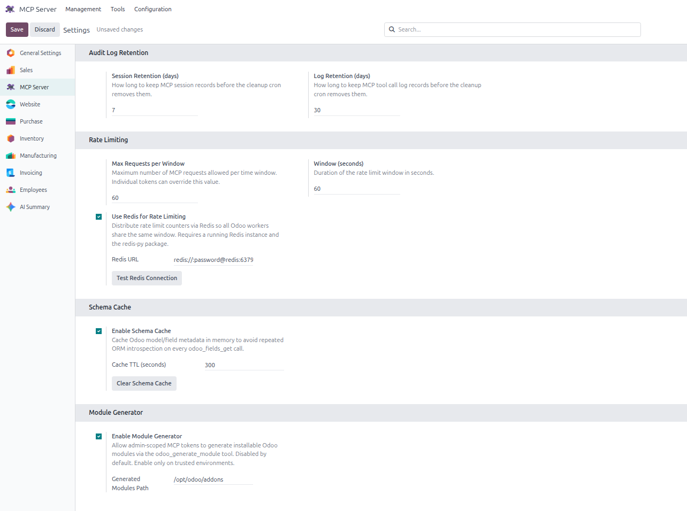
Real conversations with Claude querying live Odoo data — search records, create sale orders, post chatter messages, generate reports, all through natural language.
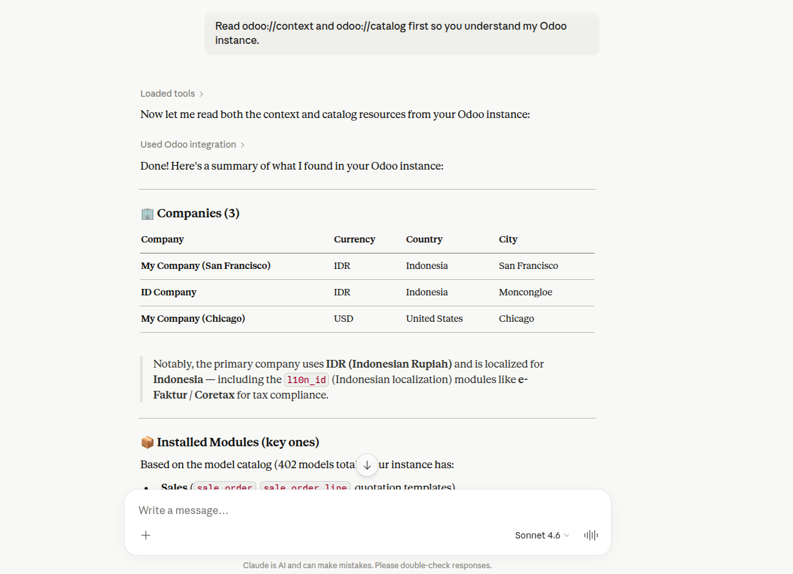
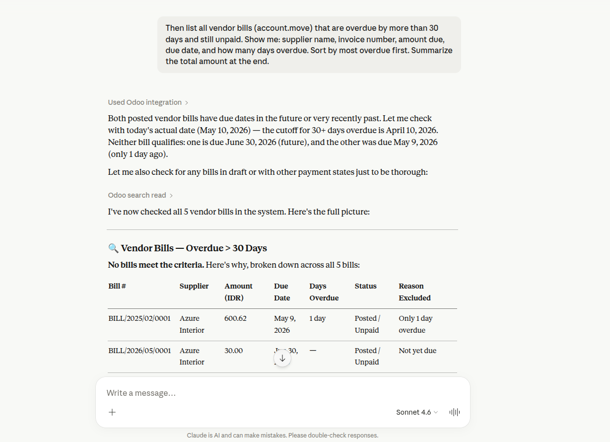
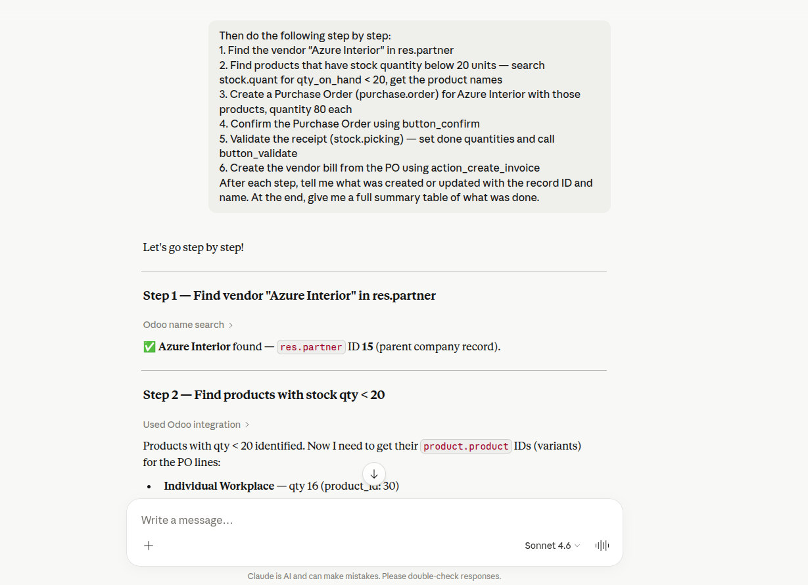
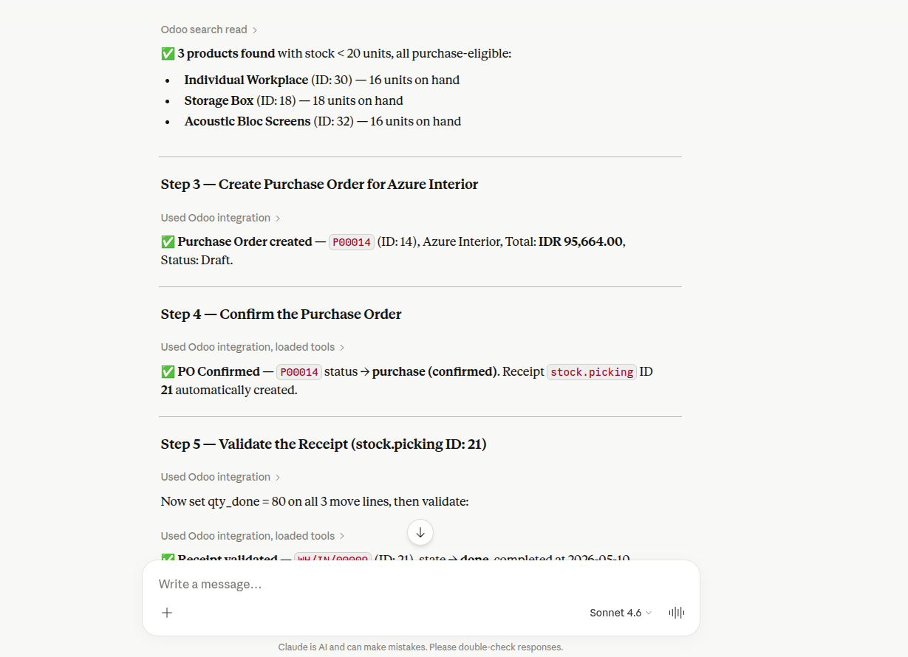
Mobile Access
No VPN. No Odoo login screen. No reports to run. Just open Claude on your phone, ask a question in plain English,
and get live ERP data back instantly — from anywhere, on any device.
Click to open full size
📱
Phone, tablet, or desktop. The Claude connection follows the user — not the device or the office network.
💬
"What are my open invoices?" — Claude queries Odoo and returns a clear, structured answer in seconds.
🔒
Per-key scopes, Odoo ACLs, and audit logs — every mobile query is controlled, traceable, and least-privilege.
Features
Connectivity & Authentication
Standards-compliant Authorization Code flow with PKCE S256, dynamic client registration (RFC 7591), refresh token rotation, and auto-discovery via /.well-known endpoints.
Self-service token management. Each user mints PATs for headless integrations. SHA-256 hashed at rest, displayed only once at creation.
Streamable HTTP transport (MCP spec 2025-03-26) plus legacy SSE — works with Claude Desktop, ChatGPT, Cursor, Gemini, n8n, LangChain, and any MCP-capable client.
Governance & Audit
Read-only, read+write, or admin. Restrict the blast radius of each token. Combine with model allowlist and field allowlist for precise least-privilege access.
CIDR-based IP restrictions per token. Lock tokens to your office network, your VPN range, or a specific automation server.
Every tool call logged with duration, record count, and result. Optional payload capture with automatic PII redaction (passwords, tokens, SSN, credit cards).
Advanced Capabilities
Seven analytics tools in one call: pivot tables, time-series with gap-filling, top-N ranking, cohort retention, funnel conversion, CSV and XLSX exports.
Public shareable dashboards with KPI tiles, ECharts visualizations, and tables. Server-side rendered, always live, mobile-responsive, embeddable via signed URL.
Submit bulk updates, exports of 100k+ records, or heavy method calls and poll for status. Background cron processes jobs respecting token scope and restrictions.
Infrastructure
Designed from the ground up for production use with horizontal scalability and observability.
What You Get
Built for secure AI connectivity with governance, least privilege, and predictable tooling.
Connect multiple LLMs and agent frameworks: Claude, ChatGPT, Gemini, custom LLMs, LangChain, and crewAI.
System Architecture
AI client → OAuth or Bearer token → /mcp endpoint → governance gate → tool dispatcher → live Odoo data
Technical Specifications
Integration Guides
Connect your favorite AI client to live Odoo data in minutes. No code required.
Step-by-step
Use Claude.ai with MCP to query Odoo data, create records, run reports, and build dashboards — directly from your browser.
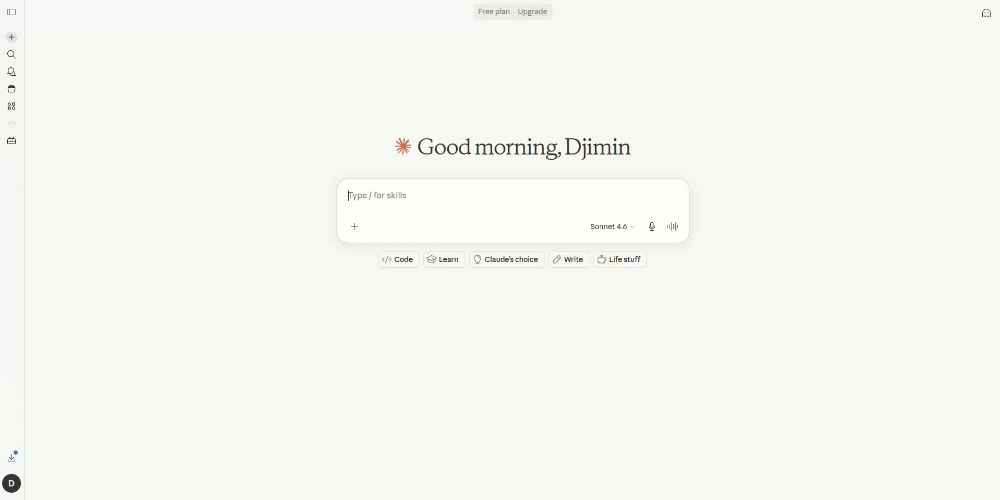
Step-by-step
Grok supports MCP connections for tool use. Link it to your Odoo instance and query your business data with natural language from the Grok interface.
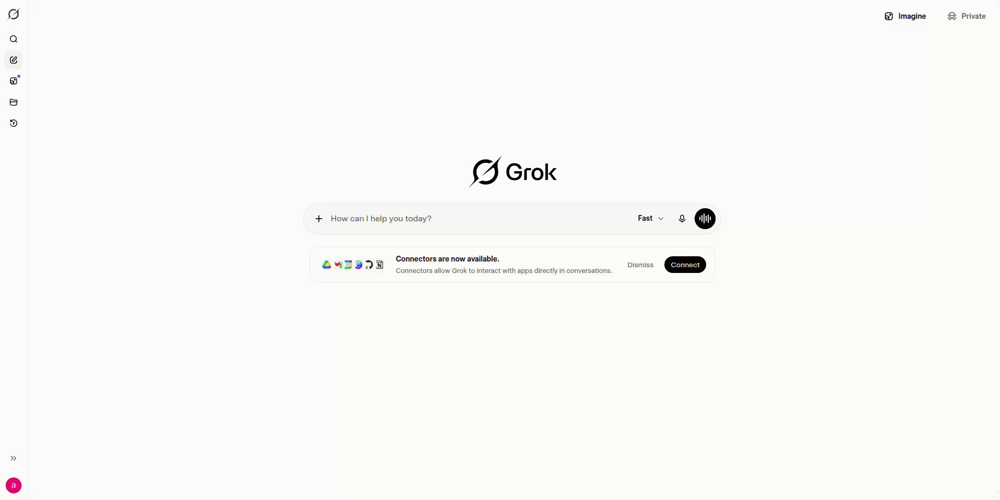
Step-by-step
ChatGPT supports MCP servers through its connector framework. Point it at your Odoo MCP endpoint and give ChatGPT full access to your live ERP data.
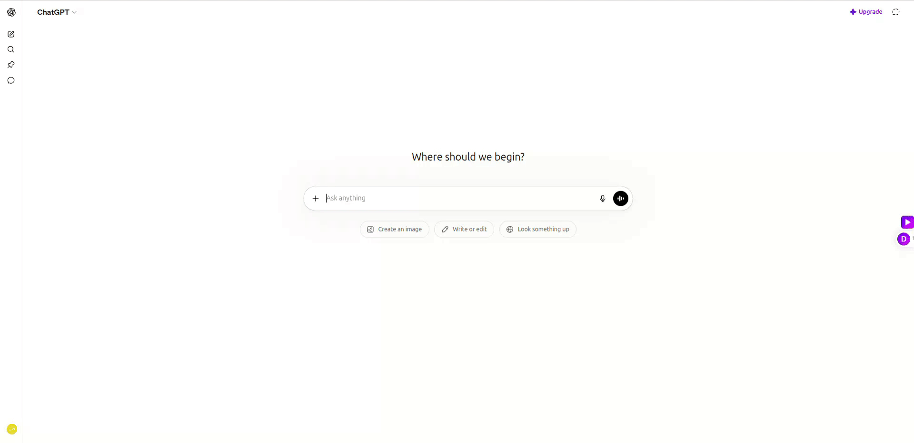
Version History
Frequently Asked Questions